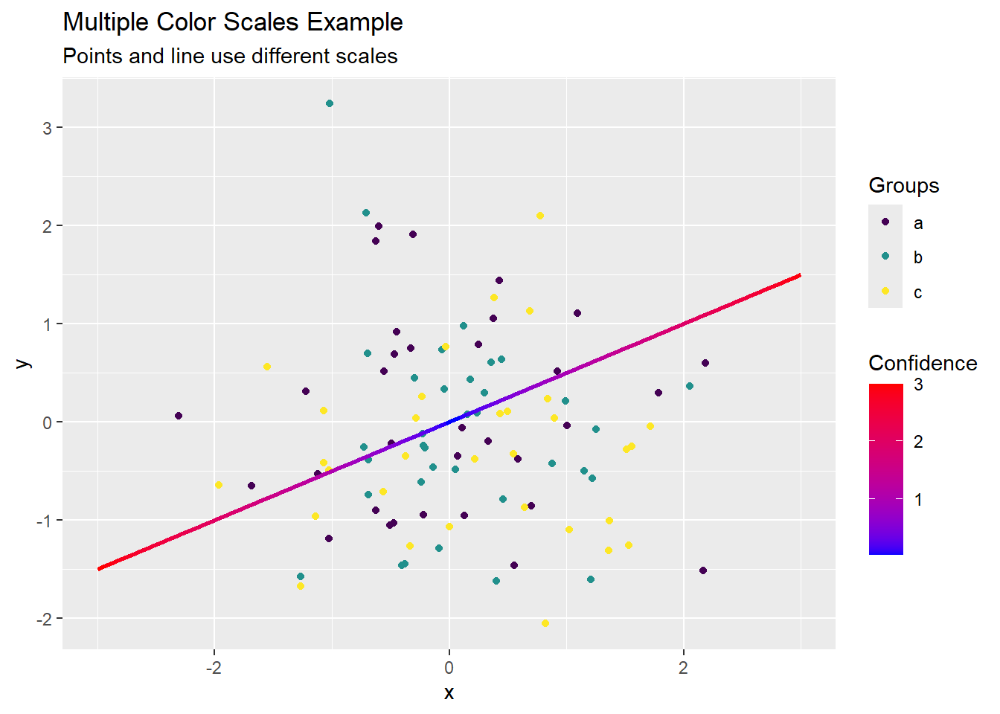
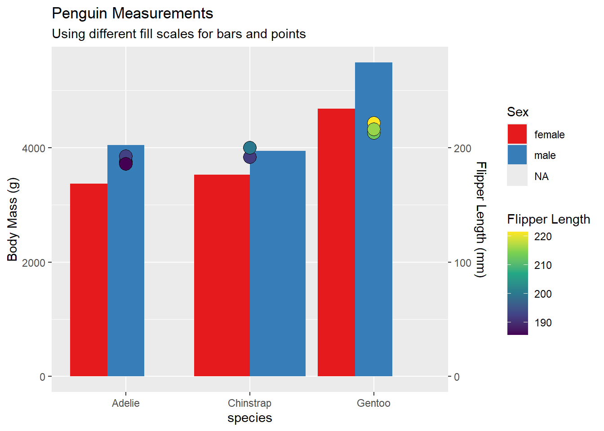
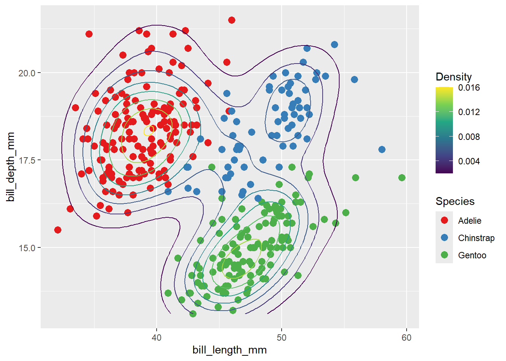
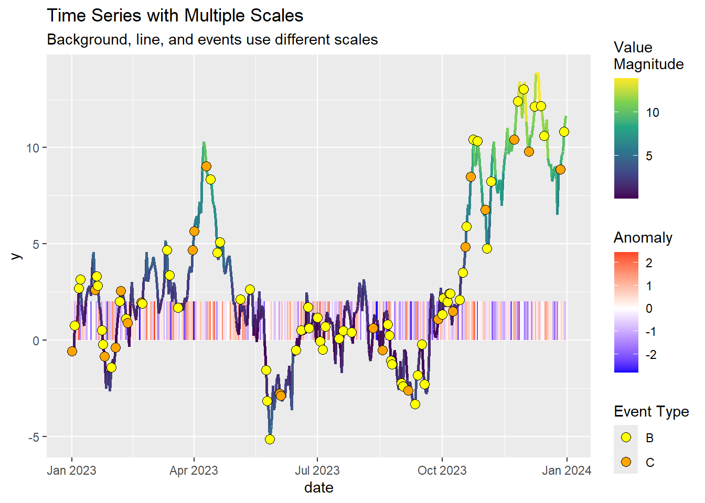
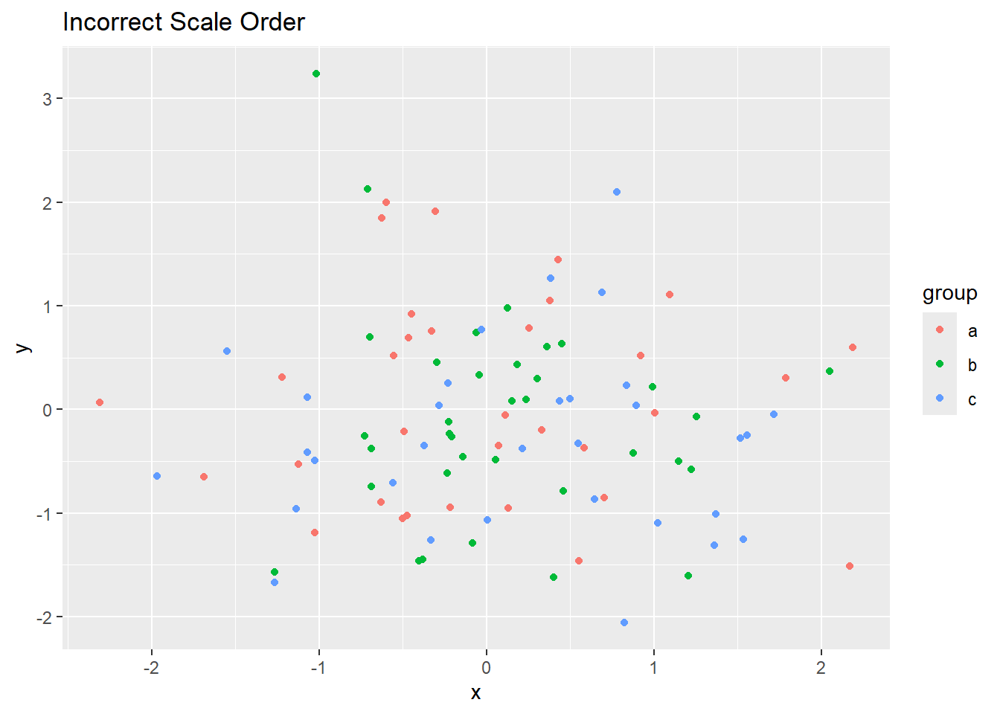
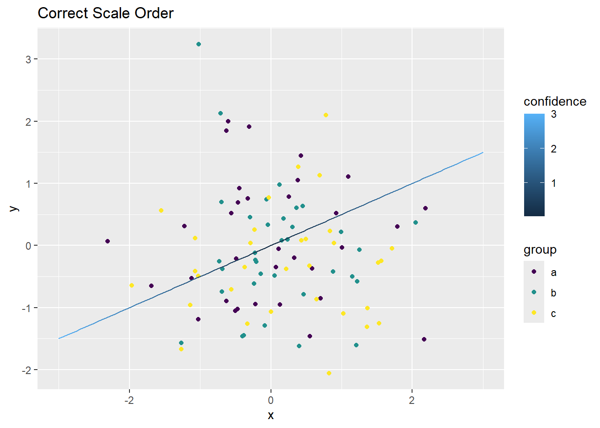
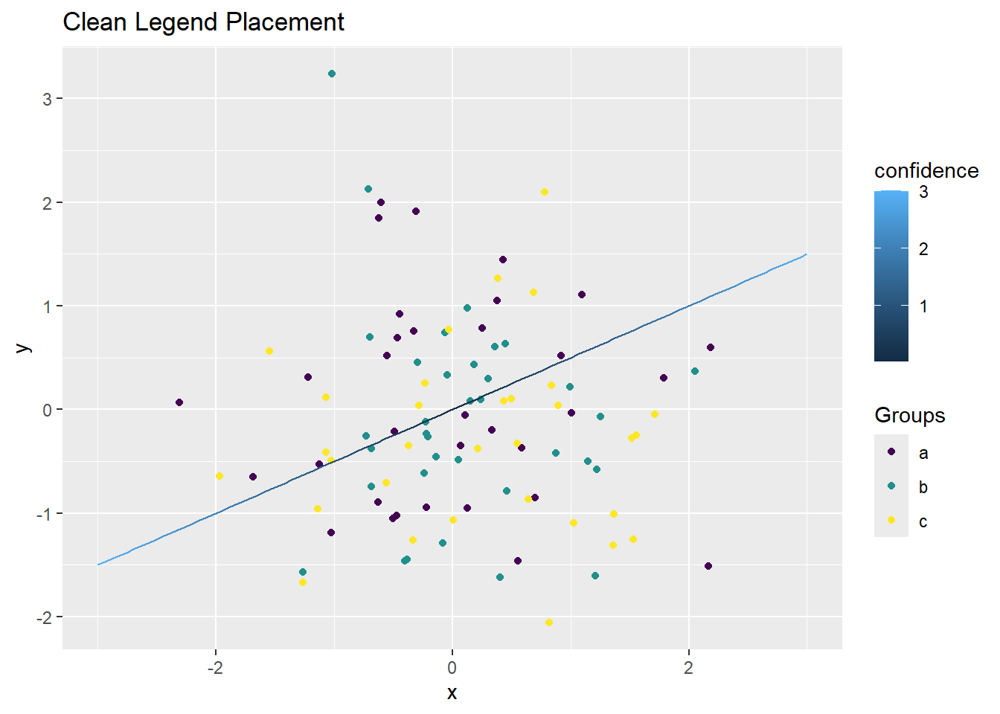
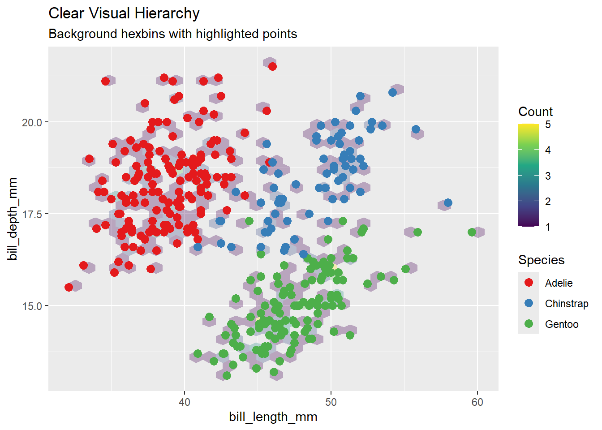
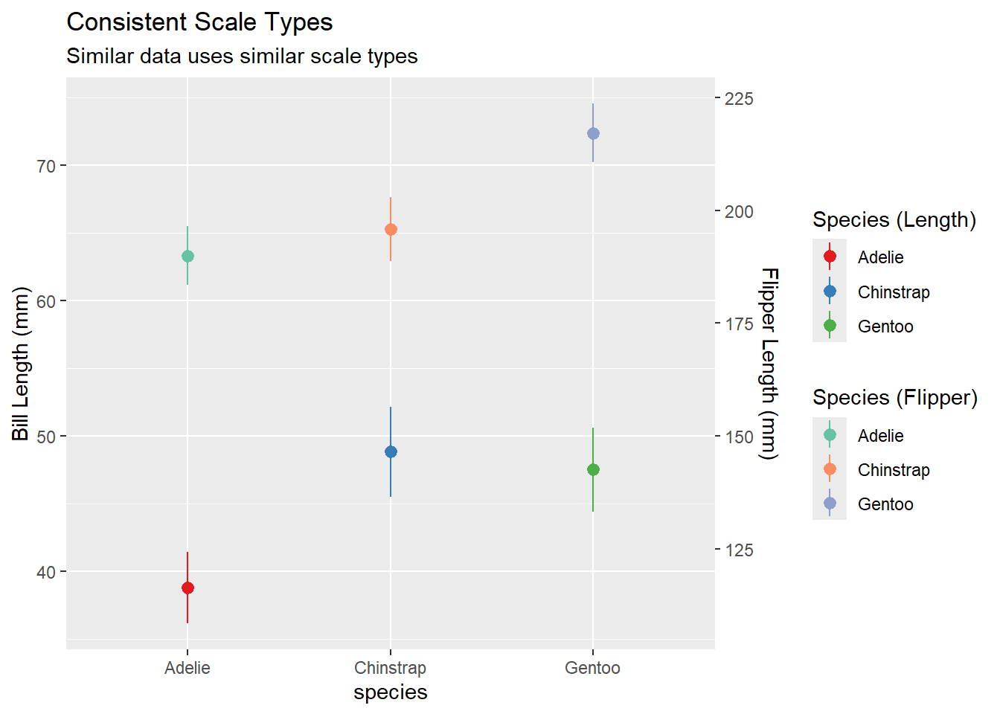

Show the code
library(hexbin)
library(tidyverse)
library(ggnewscale)
library(palmerpenguins)The ggnewscale package allows you to use multiple color and fill scales in a single ggplot2 visualization. This guide explores various techniques and applications.
# Create example data
set.seed(123)
point_data <- tibble(
x = rnorm(100),
y = rnorm(100),
group = sample(letters[1:3], 100, replace = TRUE)
)
# Add trend lines
trend_data <- tibble(
x = seq(-3, 3, length.out = 100),
y = x * 0.5,
confidence = abs(x)
)
# Plot with two color scales
ggplot() +
# First color scale for points
geom_point(data = point_data,
aes(x = x, y = y, color = group)) +
scale_color_viridis_d(name = "Groups") +
# New color scale for line
new_scale_color() +
geom_line(data = trend_data,
aes(x = x, y = y, color = confidence),
linewidth = 1) +
scale_color_gradient(
name = "Confidence",
low = "blue", high = "red"
) +
labs(title = "Multiple Color Scales Example",
subtitle = "Points and line use different scales")
# Prepare data for stacked bars
penguin_summary <- penguins %>%
group_by(species, sex) %>%
summarise(
mean_mass = mean(body_mass_g, na.rm = TRUE),
mean_flipper = mean(flipper_length_mm, na.rm = TRUE),
.groups = "drop"
)
# Create plot with different fill scales
ggplot() +
# First set of bars
geom_col(data = penguin_summary,
aes(x = species, y = mean_mass, fill = sex),
position = "dodge") +
scale_fill_brewer(name = "Sex", palette = "Set1") +
# New fill scale for second layer
new_scale_fill() +
geom_point(data = penguin_summary,
aes(x = species, y = mean_flipper * 20,
fill = mean_flipper),
size = 5, shape = 21) +
scale_fill_viridis_c(name = "Flipper Length") +
# Add second axis for flipper length
scale_y_continuous(
name = "Body Mass (g)",
sec.axis = sec_axis(~./20, name = "Flipper Length (mm)")
) +
labs(title = "Penguin Measurements",
subtitle = "Using different fill scales for bars and points")
# Create complex visualization with multiple scales
ggplot() +
# Base layer with first color scale
geom_point(data = penguins,
aes(x = bill_length_mm, y = bill_depth_mm,
color = species),
size = 3) +
scale_color_brewer(name = "Species", palette = "Set1") +
# New color scale for density contours
new_scale_color() +
stat_density_2d(data = penguins,
aes(x = bill_length_mm, y = bill_depth_mm,
color = after_stat(level)),
linewidth = 0.5) +
scale_color_viridis_c(name = "Density") #+
# New fill scale for background tiles
# new_scale_fill() +
# stat_density_2d(data = penguins,
# aes(x = bill_length_mm, y = bill_depth_mm,
# fill = after_stat(level)),
# geom = "raster",
# alpha = 0.2) +
# scale_fill_gradient(name = "Background\nDensity",
# low = "white", high = "navy") +
# labs(title = "Multiple Aesthetic Scales",
# subtitle = "Points, contours, and tiles each use different scales")# Create example time series data
set.seed(123)
time_data <- tibble(
date = seq(as.Date("2023-01-01"), as.Date("2023-12-31"), by = "day"),
value = cumsum(rnorm(365)),
anomaly = rnorm(365),
event = sample(c("A", "B", "C"), 365, replace = TRUE, prob = c(0.8, 0.15, 0.05))
)
# Create multi-scale time series plot
ggplot() +
# Background tiles for anomalies
geom_tile(data = time_data,
aes(x = date, y = 1, fill = anomaly),
height = 2) +
scale_fill_gradient2(name = "Anomaly",
low = "blue", mid = "white", high = "red") +
# New color scale for line
new_scale_color() +
geom_line(data = time_data,
aes(x = date, y = value, color = abs(value)),
linewidth = 1) +
scale_color_viridis_c(name = "Value\nMagnitude") +
# New fill scale for events
new_scale_fill() +
geom_point(data = subset(time_data, event != "A"),
aes(x = date, y = value, fill = event),
shape = 21, size = 3) +
scale_fill_manual(name = "Event Type",
values = c("B" = "yellow", "C" = "orange")) +
labs(title = "Time Series with Multiple Scales",
subtitle = "Background, line, and events use different scales")
# Problem: Incorrect scale order
bad_order <- ggplot() +
geom_point(data = point_data,
aes(x = x, y = y, color = group)) +
new_scale_color() + # New scale before first scale definition
scale_color_viridis_d()
# Solution: Correct order
good_order <- ggplot() +
geom_point(data = point_data,
aes(x = x, y = y, color = group)) +
scale_color_viridis_d() +
new_scale_color() +
geom_line(data = trend_data,
aes(x = x, y = y, color = confidence))
# Compare
bad_order + labs(title = "Incorrect Scale Order")

# Problem: Overlapping legends
messy_legends <- ggplot() +
geom_point(data = point_data,
aes(x = x, y = y, color = group)) +
scale_color_viridis_d(name = "Groups") +
new_scale_color() +
geom_line(data = trend_data,
aes(x = x, y = y, color = confidence))
# Solution: Organized legends
clean_legends <- ggplot() +
geom_point(data = point_data,
aes(x = x, y = y, color = group)) +
scale_color_viridis_d(name = "Groups") +
new_scale_color() +
geom_line(data = trend_data,
aes(x = x, y = y, color = confidence)) +
theme(
legend.position = "right",
legend.box = "vertical",
legend.margin = margin(5, 5, 5, 5)
)
# Compare
messy_legends + labs(title = "Messy Legend Placement")
# Create clear visual hierarchy
ggplot() +
# Background layer
geom_hex(data = penguins,
aes(x = bill_length_mm, y = bill_depth_mm,
fill = after_stat(count)),
alpha = 0.3) +
scale_fill_viridis_c(name = "Count") +
# New color scale for points
new_scale_color() +
geom_point(data = penguins,
aes(x = bill_length_mm, y = bill_depth_mm,
color = species),
size = 3) +
scale_color_brewer(name = "Species", palette = "Set1") +
labs(title = "Clear Visual Hierarchy",
subtitle = "Background hexbins with highlighted points")
# Use consistent scale types for related data
penguin_summary <- penguins %>%
group_by(species) %>%
summarise(across(ends_with("mm"),
list(mean = mean, sd = sd),
na.rm = TRUE))
ggplot() +
# First measure
geom_pointrange(data = penguin_summary,
aes(x = species,
y = bill_length_mm_mean,
ymin = bill_length_mm_mean - bill_length_mm_sd,
ymax = bill_length_mm_mean + bill_length_mm_sd,
color = species)) +
scale_color_brewer(name = "Species (Length)", palette = "Set1") +
# New scale for second measure
new_scale_color() +
geom_pointrange(data = penguin_summary,
aes(x = species,
y = flipper_length_mm_mean / 3,
ymin = flipper_length_mm_mean/3 - flipper_length_mm_sd/3,
ymax = flipper_length_mm_mean/3 + flipper_length_mm_sd/3,
color = species)) +
scale_color_brewer(name = "Species (Flipper)", palette = "Set2") +
scale_y_continuous(
name = "Bill Length (mm)",
sec.axis = sec_axis(~.*3, name = "Flipper Length (mm)")
) +
labs(title = "Consistent Scale Types",
subtitle = "Similar data uses similar scale types")